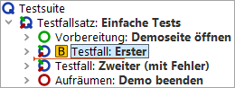
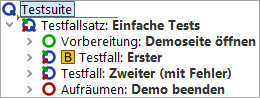

| Version 6.0.3 |
Zunächst einmal soll der Debugger aktiviert werden. Dies kann auf mehrere
Arten erfolgen, zum Beispiel durch das Setzen eines Haltepunktes (Breakpoint)
vor Start des Testlaufs. Der Zweck eines Haltepunktes ist es, den Testlauf an
einer Stelle, die man näher untersuchen möchte, zu unterbrechen.
Sobald QF-Test auf den Breakpoint trifft, wird die
Testausführung pausiert und der Debugger-Modus aktiviert. Der Pauseknopf
 ist nun
gedrückt.
ist nun
gedrückt.
|
|  | ||
|
| Abbildung 14.1: Breakpoint setzen | ||
|
|  | ||
|
| Abbildung 14.2: Testlauf starten | ||
|
|  |
||
|
| Abbildung 14.3: Breakpoint löschen | ||
Man kann einen Breakpoint nicht nur über das Tastaturkürzel [Strg-F8] sondern auch über den Menüpunkt »Debugger«-»Breakpoint an/aus« oder alternativ durch Rechtsklick auf den Knoten und Auswahl von »Breakpoint an/aus« im Popup-Menü setzen bzw. löschen. Für die weiteren Debugger-Funktionen werden wir hauptsächlich die jeweiligen Schaltflächen nennen, aber auch hier stehen die anderen Varianten zur Verfügung.
Wieder sehen Sie den kleinen Pfeil, der diesmal anzeigt, welcher Knoten als nächster ausgeführt wird. Dieser Knoten wird aktueller Knoten genannt. Bei der Aktivierung des Debug-Modus navigiert QF-Test zum aktuellen Knoten, falls dieser nicht bereits sichtbar ist, und selektiert diesen, d.h. die Zeile wird blau hinterlegt.
Das Kommando »Debugger«-»Alle Breakpoints löschen« ist ebenfalls nützlich, wenn alle Haltepunkte in allen geöffneten Testsuiten gelöscht werden sollen.
Es gibt keine Beschränkung für die Anzahl an Breakpoints, die Sie in Ihrer Testsuite setzen können. Haltepunkte werden beim Schließen der Testsuite nicht mit abgespeichert.
| Letzte Änderung: 6.9.2022 Copyright © 2002-2022 Quality First Software GmbH |